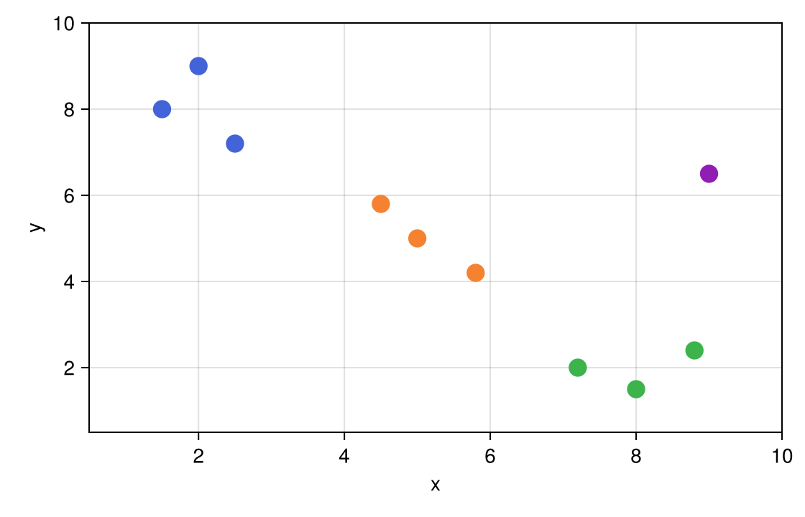

Brush a region
Drag a box across a plot and release it. Your notebook gets what the box covers: the points inside it, a block of heatmap cells, or the box's own coordinates. Cells that use the value respond when you release the box, not while you drag it.
Drag the box over the stations below:
Notebook as text
begin
samples = [
(name = "North-1", x = 1.5, y = 8.0, group = "North"),
(name = "North-2", x = 2.5, y = 7.2, group = "North"),
(name = "North-3", x = 2.0, y = 9.0, group = "North"),
(name = "Mid-1", x = 5.0, y = 5.0, group = "Mid"),
(name = "Mid-2", x = 5.8, y = 4.2, group = "Mid"),
(name = "Mid-3", x = 4.5, y = 5.8, group = "Mid"),
(name = "South-1", x = 8.0, y = 1.5, group = "South"),
(name = "South-2", x = 8.8, y = 2.4, group = "South"),
(name = "South-3", x = 7.2, y = 2.0, group = "South"),
(name = "East", x = 9.0, y = 6.5, group = "East"),
]
group_color = Dict("North" => "#4363d8", "Mid" => "#f58231", "South" => "#3cb44b", "East" => "#911eb4")
fig = Figure(size = (560, 360))
ax = Axis(fig[1, 1]; xlabel = "x", ylabel = "y", limits = (0.5, 10.0, 0.5, 10.0))
s = scatter!(
ax, [r.x for r in samples], [r.y for r in samples];
color = [group_color[r.group] for r in samples], markersize = 18,
)
pts = interactables(s; payloads = samples)
roi = ROIInteractable(ax; bounds = (4.0, 6.5, 3.8, 6.5), selects = s)
nothing
end@bind picks masque(fig, pts, roi; bind = s)
When you release the box, a cell that uses picks responds. This one lists the stations inside:
Notebook as text
if isempty(picks)
md"*No stations in the box.*"
else
rows = samples[picks]
md_rows = ["| Station | x | y | Group |", "|---|---:|---:|---|"]
for r in rows
push!(md_rows, "| $(r.name) | $(r.x) | $(r.y) | $(r.group) |")
end
Markdown.parse("**$(length(rows)) stations**\n\n" * join(md_rows, "\n"))
endSelect the points inside a box
An ROIInteractable adds the box, and selects names the plot whose points it collects. To give each point its row of data, pass the scatter to interactables with payloads, and pass both to the same masque call, as the figure cell above does. bounds is where the box starts, as (xmin, xmax, ymin, ymax) in data coordinates.
bind = s makes picks the scatter's field: the points inside the box, as one ElementEvent per point, holding that point's payload fields, such as name and group. It starts with the points inside bounds, highlighted, and each release replaces it with the points inside the box then. A box with no points inside gives an empty list.
Use picks to index your data: samples[picks] is the rows of samples inside the box.
If your rows are a DataFrame, pass it as payloads, with one row per point in the order you plotted them:
pts = interactables(s; payloads = df)Then df[picks, :] is the rows inside the box. Use selections in other cells shows what else the points can index, and how to show a table while the box is empty.
Only the box sets picks: hovering a point still shows its tooltip, but clicking it does not change picks. Without bind, the value is a named tuple with a field for the scatter and one for the box, which holds a BoundsEvent with where the box sits:
@bind sel masque(fig, pts, roi)Here sel.scatter is the points inside and sel.roi is the box. Other plots in the figure keep their own fields and still take clicks.
Brush heatmap cells
Name a heatmap or image in selects instead, and the box returns one GridWindowEvent for the block of cells it covers. Brush a block of cells shows how to read it.
Read the box's bounds
Leave out selects, and the box's field holds only the box: a BoundsEvent with xmin, xmax, ymin, and ymax. It starts at bounds, so box.xmin works before the first drag. Use this when the region is what you want, such as a time window, a crop, or a range to fit over. To have the value be the box itself, pass it as bind:
box = ROIInteractable(ax; bounds = (2.0, 5.0, 0.0, 1.0))
@bind window masque(fig, box; bind = box)To start one widget's box where another's was released, pass that widget's BoundsEvent as bounds.
Move and resize the box
Drag inside the box to move it, or drag a corner to resize it in both directions. Dragging the middle of an edge moves only that edge, and the pointer changes shape to show which one you are on. If the axis also has a ViewInteractable, a plain drag moves the box and Shift+drag pans the plot. To use the keyboard, press Tab until the box has focus: the arrow keys move it, Alt with an arrow grows the side that arrow points to, and Alt+Shift with an arrow shrinks it. See Keyboard and screen readers for the rest.
Plots a box can select
selects can name a plot of points, such as a scatter, or a heatmap or image. A plot that draws both lines and points, such as scatterlines, gives the box its points. selects also takes a layer id, such as the id you gave interactables, and that layer must be in the same masque call. One widget can hold several boxes, each with its own field, along with thresholds and plots you click. The plot a box selects from takes no clicks, since the box sets its field. The box needs a 2D Axis; see Supported plots and axes for which axes and scales.
For larger examples, Box-select scatter summarizes two groups of points inside the box, and Image ROI brushes an image.